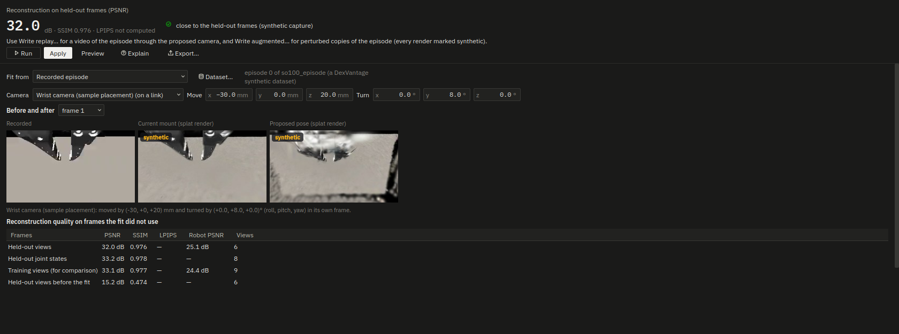

All worked examples · source: docs/guide/splat.md
Splat views: a worked example
What would a wrist camera see if its bracket held it 3 cm further back and tilted down 8°, before the bracket is printed? And can a recorded episode be turned into extra training data seen through slightly knocked cameras? This walk-through fits a robot-aligned 3D Gaussian Splatting rig to the SO-100 sample, reads its quality on frames the fit did not use, previews a proposed wrist camera pose, and writes a replay video and an augmented LeRobot dataset. The method, its equations, its checks and its limits are in Robot-aligned 3D Gaussian Splatting (spec §9.3, Phase 12).
Everything here is synthetic: the "recording" is one of DexVantage's own synthetic episodes (MuJoCo renders), and every splat image is a render. No real recording is in the repository; on a real rig the episode is your LeRobot recording, made with the rig the project describes (measure its mounts first with the silhouette calibration: the views are posed at the planned mounts).
Every figure below was measured on 2026-11-08 on an NVIDIA GeForce RTX 5080 (PyTorch 2.14.1, CUDA 13.0, the
plain-torch rasteriser); scripts/splat_quality.py wrote them to out/splat/quality.json. A CUDA fit does not repeat
bit for bit: another run of the same fit differs by a few tenths of a dB (the page below read 32.0 dB where the
measurement read 32.4).
A. What it needs
The splat extra and a CUDA GPU:
pip install "dexvantage[splat]" --extra-index-url https://download.pytorch.org/whl/cu130
Without it the Splat views page (Simulate ▸ Splat views) says "splat extra not installed" and its buttons are off;
dexvantage --self-test says the same on its splat line. Without a CUDA device the study refuses ("There is no CUDA
device here…") unless the device setting is cpu, which fits small scenes slowly.
B. A demonstration fit (no recording)
- Open the sample: File ▸ Open sample ▸ SO-100.
- Simulate ▸ Splat views. Set Fit from to MuJoCo render of the project (demonstration).
- Click Run. The study renders 48 views of the cell at 160 × 120 px from a sphere round the robot at 3 joint states (home and two drawn within ±0.4 rad), fits 1,500 steps (60.3 s) and scores the result: 65.0 s in all.
The headline reads 23.1 dB, "visible differences (synthetic capture)", with SSIM 0.936 and LPIPS 0.076 beside it: the rig's renders against the 6 views (every 8th) the fit did not use. The quality table adds the 6 held-out joint states, drawn with another seed from new poses: 24.4 dB, SSIM 0.951, LPIPS 0.062. Before the fit the same held-out views scored 15.9 dB. The UR5e sample reads 26.5 dB, SSIM 0.957, LPIPS 0.056.
LPIPS needs AlexNet's ImageNet weights (244 MB from download.pytorch.org). They are not bundled: Get LPIPS weights… asks before downloading them into DexVantage's cache folder; until then the LPIPS column says why it is empty.
C. A fit to a recorded episode
Simulate ▸ Generate synthetic episodes… (or core/sim/episodes.generate) writes a LeRobot v3.0 recording; here one
episode, no faults, at most 320 px wide (80 rows, 2.6 s, both of the sample's cameras). On the Splat views page click Dataset…, choose it, set Fit
from to Recorded episode and Run. The study takes 24 frames per camera farthest apart in joint space, poses
each at its camera's mount at the frame's logged joint state (the wrist camera moves with the arm), renders the
model's depth and masks for them and fits (29.4 s).
The headline reads 32.4 dB, "close to the held-out frames (synthetic capture)", SSIM 0.975, LPIPS 0.022, on the episode's held-out views; on the 12 frames farthest in joint space from every frame used (6 per camera) it is 33.3 dB. The UR5e's episode gives 31.7 dB on held-out views and 30.2 dB on its hardest frames.
An episode fitted from its static camera alone is refused: "The episode has too few distinct views to fit a splat rig: 1 camera pose at least 2 cm or 5° apart, where 8 are needed (DexVantage defaults)…". A static camera is one pose however long it records.
D. A proposed wrist camera pose
Choose the wrist camera, enter Move −30 mm along x (back) and 20 mm along z, Turn 8° in pitch, and Run. The before/after row shows, at three frames of the episode, the recorded frame, the splat render through the current mount and the render through the proposed pose; both renders carry a synthetic badge.
Read the proposed image with its measured quality. Against MuJoCo's own renders through the moved camera (the episode's rig, at 4 of the episode's joint states, 160 px wide), the SO-100's wrist camera scores 26.2 dB where it is, 17.9 dB moved 2 cm back, 15.8 dB at 5 cm and 13.4 dB at 10 cm; 2 cm sideways gives 19.2 dB. The UR5e's wrist D405: 28.1, 17.5, 15.0 and 13.6 dB. A camera only a few centimetres from every captured view already sees surfaces no view saw, so the proposed image shows the layout (what enters and leaves the frame, where the gripper sits) more than the detail. At joint states the episode never reached (±0.4 rad about home) the same wrist camera scores 16.7 dB even where it is: the rig is good where the episode looked.

Apply moves the camera's mount to the proposed pose (one undo step, refused for a locked sensor); Preview says where it would go.
E. Replay the episode through the proposed camera
Write replay… (or dexvantage --sample so100 --splat replay --splat-out out/ --dataset <episode>) renders every
state row of the episode at its logged q(t) through the proposed camera at the camera's stream size and writes
out/splat_replay_synthetic/:
wrist-camera-sample-placement_replay_synthetic.mp4: AV1 (or H.264), encoded as the LeRobot writer encodes and decoded again after writing (every frame must decode);frames/frame_000000_synthetic.png… one image per row;dexvantage_splat_manifest.json: the camera's proposed pose, the source episode, the rig's quality, the SHA-256 of every file and the provenance block,"synthetic": true.
The SO-100's 80 rows at 1280 × 720 took 5.7 s (17.1 frames a second with the PNGs).
F. Perturbed copies for training
Write augmented… (or --splat augment) writes out/splat_augment_synthetic/: a LeRobot v3.0 dataset of
augment_n copies of the episode (default 4), each with every recorded camera re-rendered through its mount
perturbed by one draw of the mount tolerances (§8.5, the same draws --export … --formats perturbations writes for the
same seed; here ±1 mm and ±0.5° per axis, uniform). Its meta/info.json carries "dexvantage": {"synthetic": true, …}
and every video feature's info "dexvantage.synthetic": true; the manifest lists each episode's draw and every file's
SHA-256. The 4 copies of the SO-100 episode (320 rows, two cameras) took 9.1 s.
G. From Python
import dexvantage as dv
rig = dv.sample('so100')
res = dv.splat.fit(rig, dataset='episodes/', source='episode')
res.headline['text']
dv.splat.replay(rig, 'out/', dataset='episodes/', target_offset_m=[-0.03, 0, 0.02], target_rpy_deg=[0, 8, 0])
dv.splat.augment(rig, 'out/', dataset='episodes/', augment_n=8)
The fitted rig is kept in the cache folder (keyed by the project, its robots, the source and the settings), so replay and augment reuse it.